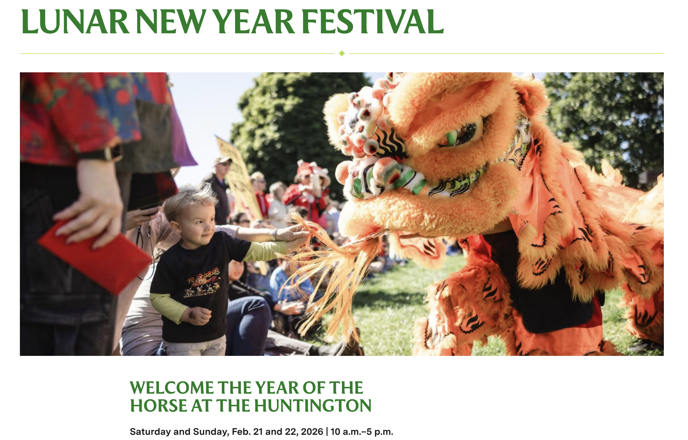

The Kunqu Opera Society, USA was founded in 1979. Our mission is to preserve and promote the Kunqu performing art, and to introduce this heritage to the diverse communities of Los Angeles. In addition to regular practices, we perform and present educational programs at universities, museums, libraries, local communities, and other cultural events, with bilingual subtitles (Chinese/English) to support understanding and appreciation.
We believe a living art endures through the value of the art itself, the quality of performers and productions, behind-the-scenes technical support, the dedication of volunteers, strong sponsorship and donations, and—most importantly—the encouragement of our audiences.
Upcoming Events

- 2/21/2026 — “Jumping the Wall and Playing Go” from The Romance of the West Chamber, Chinese Garden, Celebration Court (Huntington Library), 11:00–11:30 am & 1:00–1:30 pm
- 2/22/2026 — “Stroll in the Garden” from The Peony Pavilion, Chinese Garden, Celebration Court (Huntington Library), 11:00–11:30 am & 1:00–1:30 pm
Past Events
- 2/9/2026 — Music Alive in the Archive: Celebrating the Music and Legacy of Hua Wenyi , Recording Studio, Ostin Music Center (UCLA), 6:00–7:30 pm — An evening of conversation and performances honoring Hua Wenyi and celebrating the Hua Wenyi Collection at the UCLA Ethnomusicology Archive.
- 2/7/2026 — “The Romance of the West Chamber · Jumping the Wall and Playing Go” , Mark Taper Auditorium (Los Angeles Central Library), 2:30–3:00 pm
- 10/18/2025 — Kunqu Opera Society USA 2025 Autumn Performance , Dynasty Theater (Los Angeles) — An evening featuring qinggong (清工), caicuan (彩爨), and traditional Chinese instrumental music.
- 2/2/2025 — “An Interrupted Dream” from The Peony Pavilion, Chinese Garden, Celebration Court (Huntington Library), 11:00–11:30 am & 1:00–1:30 pm
- 2/1/2025 — “Inquiry about Illness” from The Tale of the Jade Hairpin, Chinese Garden, Celebration Court (Huntington Library), 11:00–11:30 am & 1:00–1:30 pm
- 1/11/2025 — “Princess Baihua Bestows Her Sword” , Mark Taper Auditorium (Los Angeles Central Library), 2:30–3:00 pm
- 2/11/2024 - 2024 Chinese New Year Festival of Liu Fang Yuan, "The Banquet" by Bin Ma and Fang Wei at the Huntington Library, San Marino
- 2/10/2024 - 2024 Chinese New Year Festival of Liu Fang Yuan, "Princess Baihua Bestows Her Sword" by Bohan Yei, Fang Wei and Yimeng Liu at the Huntington Library, San Marino (alternate video)
- 1/14/2024 - "A Stroll in the Garden" by Wei Wang and Yimeng Liu, "The Banquet" by Bin Ma and Fang Wei, "Mistake With a Kite" by Wei Wang and Sunny Zhang at Liu Fang Yuan, the Huntington Library, San Marino
- 2/5/2023 - 2023 Chinese New Year Festival of Liu Fang Yuan , "A Sweet Rendezvous" by Liyung Hou, Wei Wang and Yimeng Liu at the Huntington Library, San Marino
- 2/5/2022 - 2022 Chinese New Year Festival of Liu Fang Yuan , "The School Room" by Yimeng Liu, Fang Wei and Wei Wang, "A Stroll in the Garden" by Wei Wang and Yimeng Liu at the Huntington Library, San Marino
- 2/20/2010 - "A Stroll in the Garden" at the Huntington Library, San Marino
- 3/20/2010 & 3/21/2010 - "Peony Pavilion" at the University of California, Irvine (UCI)
- 8/1/2010 - "New Couple" at California Institute for Chinese Performing Art, El Monte
- 12/11/2010 & 12/12/2010 - "Peony Pavilion" by Ma Yaoyao, Shi Xiaomei, Lu jia, Zhu Huiying, Chen Xiaoming at the Downey Civic Theatre
- 4/16/2011 - "An Interrupted Dream" by Jianjing Kuang & Justina Lee, "Joe, The Connoisseur in Music" by Hui Pan & Wendy Chang, "Xu-Ge (A Lovers' Spat)" and "Xiao-Yian (A Disrupted Party)" by Taiji Wang & Liyung Hou at the Downey Civic Theatre
- 4/17/2012 (AM) - Lecture: The art of Kunqu Performance by Shi Xiaomei, Kunqu Studio and Jiangsu Province Kunqu Opera Troupe at Schoenberg Auditorium, UCLA
- 4/17/2012 (PM) - "The Mountain Gate" by Zhao Yutao & Li Hongliang, "Union in the Shades from Peony Pavilian" by Shi Xiaomei & Xu Yunxiu at Schoenberg Auditorium, University of California, Los Angeles (UCLA)
- 4/18/2012 - Lecture: The art of Kunqu Performance by Shi Xiaomei, Kunqu Studio and Jiangsu Province Kunqu Opera Troupe at the University of California, Irvine (UCI)
- 4/21/2012 - "Peach Blossom Fan" by Shi Xiaomei, Gong Yinlei, Zhao Jian, Li Hongliang, Xu Yunxiu, Gu Jun & Zhao Yutao at the Downey Civic Theatre
- 4/22/2012 - Refined Excerpts of Kunqu Classics "A Chance Meeting in the Great Hall" by Shi Xiaomei, Li Hongliang, Gong Yinlei & Xu Yunxiu, "Painting the Portrait" by Xu Yunxiu," "Captured Alive" by Gong Yinlei & Li Hongliang, "Hearing the Appeal" and "Reprimanding the Father" by Shi Xiaomei, Zhao Jian & Gu Jun at the Downey Civic Theatre
- 10/19/2013 - "Ballad of the Broken Axe Mountain" by Liyung Hou & Liu Xiao at the Downey Civic Theatre
- 8/28/2015 & 8/29/2015 - Performance of Classics of Kunqu Opera and Chinese Folk Music including Kunqu Opera Arias by Henry Chang, Susan Liu, Gina Liu, William Kin, Hui Pan and Zhaogan Li plus "The Broken Bridge" by Liyung Hou, Liping Kin & Justina Lee at the Huntington Library
- 10/6/2017 - "A Stroll in the Garden", "An Interrupted Dream" by Liyung Hou, Sophia Dai and Justina Lee at Eugene Public Library, Oregon
- 5/3/2018 & 5/6/2018 - "Garden Version of `A Stroll in the Garden` and `An Interrupted Dream`" by Ledell Wu, Sophia Dai, Wei Wang and Fang Wei at the Huntington Library
- 8/19/2018 - "Kunqu Opera: Love, Hatred, Passion & Vengeance" including "A Stroll in the Garden" by Wei Wang & Fang Wei, "An Interrupted Dream" by Ledell Wu & Justina Lee, "Assassination of General Tiger" by Liyung Hou and Qingxian Liu at Rothenberg Hall, the Huntington Library, San Marino
- 6/17/2000 - "A Stroll in the Garden" at the San Gabriel Civic Auditorium, San Gabriel
- 12/2/2000 - "Steals the Poem", "Shocked by the Coup", "Bestowing a Sword" at the California Institute for Chinese Performing Art, El Monte
- 9/27/2003 - "Happy Union", "Rendezvous", "Haven in a Boat", "Hoo's Village" at the California Institute for Chinese Performing Art, El Monte, California"
- 4/17/2004 - "Asking for Tea", "For Death Together" at the California Institute for Chinese Performing Art, El Monte
- 2/14/2005 - "Mischief at Class" at Claremont McKenna College, Claremont
- 5/28/2005 - "Surprise Awakening from a Dream" at the San Gabriel Civic Auditorium, San Gabriel
- 10/8/2005 - "New Couple", "Goodbye, My Son" and "A Stroll in the Garden", "Surprise Awakening from a Dream" by Jennifer Hua and Yue Meiti at the California Institute for Chinese Performing Art, El Monte
- 8/30/2008 - "New Couple", "Goodbye, My Son", "A Stroll in the Garden", "Surprise Awakening from a Dream" at the California Institute for Chinese Performing Art, El Monte
- 7/25/2009 - "A Stroll in the Garden", "Steals the Poem", "Broken Bridge", "A Maddening Dream" at the California Institute for Chinese Performing Art, El Monte
- 6/23/1990 - "Broken Bridge" at the San Gabriel Civic Auditorium, San Gabriel
- 9/2/1990 - "Broken Bridge" at the Chinese Moon Festival in Los Angeles Chinatown
- 5/22/1993 - "Escorting Lady Jing-Niang" at Rosemead High School, Rosemead
- 5/29/1993 - "Mischief at Class", "A Stroll in the Garden", "Surprise Awakening from a Dream", "Kill General Tiger" at the Chinese Culture Center, El Monte
- 6/11/1994 - "Happy Union" at the Chinese Culture Center, El Monte
- 4/30/1995 - "Flirtation with the Zither", "Buddhist Nun Longing to Return the World", "Banquet for Two" at Chinese Culture Center, El Monte
- 6/2/1996 - "Escorting Lady Jing-Niang" at the Chinese Culture Center, El Monte
- 2/2/1997 - "Buddhist Nun Longing to Return the World, "Banquet for Two" at the Barclay Theatre, Irvine"
- 6/7/1997 - "A Maddening Dream" at the Chinese Culture Center, El Monte
- 5/23/1998 - "Steals the Poem" by Yue Meiti and Zhang Jingxian at Evergreen Bookstore, Monterey Park
- 6/6/1998 - "Dreamland Revisited", "Refuse for Remarriage", "Broken Bridge", "Village Searching" at the Chinese Culture Center, El Monte
- 7/1979 - Weekly meetings at Mama Yu's residence in Monterey Park
- 4/11/1981 - "A Stroll in the Garden" by Lisa Lu and Li-Yung Wang at the Los Angeles County Museum of Art, Los Angeles
- 2/23/1985 - "Riverside of Chu" at Pasadena City College, Pasadena
- 9/6/1987 - "A Stroll in the Garden" at San Diego State University, San Diego
- 6/1989 - "Happy Union" at Jackson School, Rosemead
- 8/1989 - Chinese Kwun Opera Society established as a non-profit organization
Contact Us
You can reach us at info@kunquopera.org
欢迎并感谢捐款
Donations are welcome and appreciated.
Zelle: info@kunquopera.org
Recipient: Kunqu Opera Society, USA
Note: Kunqu Opera Society, USA is a 501(c)(3) nonprofit organization, registered as a charitable organization in California.